대기환경산업기사 (2007-09-02 기출문제)
1과목: 대기오염개론
1. 다음은 Dioxin의 특징에 관한 설명이다. ( )안에 가장 알맞은 것은?
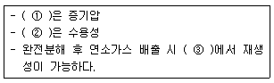
- ① 높 ② 낮 ③ 700-800℃
- ① 낮 ② 낮 ③ 300-400℃
- ① 높 ② 높 ③ 300-400℃
- ① 낮 ② 높 ③ 700-800℃
(정답률: 알수없음)

2. 대기오염물질의 확산과 관련있는 스모그현상과 기온역전에 관한 내용으로 가장 거리가먼 것은?
- 로스앤젤레스 스모그사건은 광화학스모그에 의한 침강성 역전이다.
- 런던스모그 사건은 주로 자동차 배출가스 중의 질소산화물과 탄화수소에 의한 것이다.
- 방사성역전은 밤과 아침사이에 지표면이 냉각되어 공기온도가 낮아지기 때문에 발생한다.
- 침강성역전은 고기압권내에서 공기가 하강하여 생기며, 넓은 범위에 걸쳐 시간에 무관하게, 장기적으로 지속된다.
(정답률: 알수없음)
3. 실내공기오염물질인 라돈(Rn)에 관한 설명 중 옳지 않은 것은?
- 무색. 무취의 기체로 폐암을 유발한다.
- 자연계에 널리 존재하며, 농도 단위는 pCi/L를 사용한다.
- 공기와 무게가 비슷하여 호흡기로 흡입이 현저하다.
- 토양, 콘크리트, 대리석 등으로부터 공기중으로 방출된다.
(정답률: 알수없음)
4. 오존(O3)에 관한 설명 중 옳지 않은 것은?
- 폐수종과 폐충혈 등을 유발시키며, 섬모운동의 기능장애를 일으킨다.
- 식물의 경우 주로 어린잎에 피해를 일으키며, 오존에 강한 식물로는 시금치, 파 등이 있다.
- 오존에 약한 식물로는 담배, 자주개나리 등이 있다.
- 인체의 DNA와 RNA에 작용하여 유전인자에 변화를 일으킬 수 있다.
(정답률: 알수없음)
5. 파장이 5240Å인 빛 속에서 밀도가 0.85g/cm3이고, 지름이 0.8㎛인 기름방울의 분산면적비 K가 4.1이라면 가시도가 2414m 되기 위해서는 분진의 농도는 약 얼마가 되어야 하는가?
- 1.23×10-4g/m3
- 1.44×10-4g/m3
- 1.62×10-4g/m3
- 1.79×10-4g/m3
(정답률: 알수없음)
6. Los Angeles Smog 사건에 관한 설명 중 옳지 않은 것은?
- 주로 낮에 발생하였다.
- 주 오염 물질은 석유계 연료의 사용에 기인하였다.
- 발생당시의 기온은 24-32℃ 이었다.
- 습도는 85% 이상이었다.
(정답률: 알수없음)
7. 다음 대기상태에 해당되는 연기의 형태는?
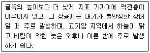
- Looping
- Conning
- Fanning
- Lofting
(정답률: 알수없음)
8. Sutton의 확산방정식에서 현재 굴뚝의 유효고도가 40m일 때, 최대지표농도를 1/4로 낮추려면 굴뚝의 유효고도를 얼마만큼 더 증가시켜야 하는가? (단, 기타 조건은 같다고 가정한다.)
- 40m
- 65m
- 80m
- 110m
(정답률: 알수없음)
9. 다음 설명하는 법칙으로 옳은 것은?
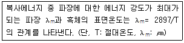
- 스테판-볼츠만의 법칙
- 플랑크 법칙
- 비인의 변위법칙
- 알베도의 법칙
(정답률: 알수없음)
10. 다이옥신을 이루고 있는 원소 구성으로 가장 알맞게 연결된 것은? (단, 산소는 2개)
- 1개의 벤젠고리, 2개 이상의 염소
- 2개의 벤젠고리, 2개 이상의 불소
- 1개의 벤젠고리, 2개 이상의 불소
- 2개의 벤젠고리, 2개 이상의 염소
(정답률: 알수없음)
11. 대기권의 구조에 관한 설명 중 가장 거리가 먼 것은?
- 대기의 수직온도 분포에 다라 대류권, 성층권, 중간권, 열권으로 구분할 수 있다.
- 대류권 기상요소의 수평분포는 위도, 해륙분포 등에 의해 다르지만 연직방향에 따른 변화는 더욱 크다.
- 대류권의 높이는 통상적으로 여름철에 낮고 겨울철에 높으며, 고위도 지방이 저위도 지방에 비해 높다.
- 대류권의 하부 1-2km 까지를 대기경계층이라고 하며, 지표면의 영향을 직접 받아서 기상요소의 일변화가 일어나는 층이다.
(정답률: 알수없음)
12. 국지풍에 관한 설명 중 옳지 않은 것은?
- 육지와 바다는 서로 다른 열적 성질 때문에 주간에는 바다로부터, 야간에는 육지로부터 바람이 부는 해륙풍이 생겨난다.
- 해륙풍이 장기간 지속될 경우 폐쇄된 국지순환의 결과로 해안가에 산업도시가 있는 지역에서는 대기오염물질의 축적이 일어날 수 있다.
- 산악지형인 경우, 야간에는 사면 상부에서부터 장파복사 냉각이 시작되어 중력의 의한 하강기류가 생기며 이를 곡풍이라고 한다.
- 바람장미를 이용하여 특정지역 오염물질의 대체적인 확산패턴을 예측할 수 있다.
(정답률: 알수없음)
13. 다음 중 2차 오염물질이 아닌 것은?
- 이산화황이 대기중에서 산화하여 생성된 삼산화황
- 이산화질소의 광화학반응에 의하여 생성된 일산화질소
- 질소산화물의 광화학반응에 의한 원자상 산소와 대기중의 산소가 결합하여 생성된 오존
- 석유정제 시 수소첨가에 의하여 생성된 황화수소
(정답률: 알수없음)
14. 직경이 25cm인 관에서 유체의 흐름속도가 2.5m/sec이고, 유체의 점도가 1.75×10-5kg/mㆍsec라고 할 때 이 유체의 레이놀드수(Nre)와 흐름특성은? (단, 유체의 밀도는 1.15kg/m3이다.)
- 2245. 층류
- 2350. 층류
- 41071. 난류
- 114703. 난류
(정답률: 알수없음)
15. 다음은 어떤 대기오염물질에 대한 설명인가?
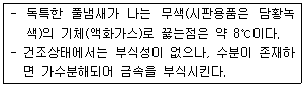
- 시안화수소
- 포스겐
- 테트라에틸납
- 폴리클로리네이티드바이페닐
(정답률: 알수없음)
16. 다음 중 오존층 보호를 위한 국제협약은?
- 바젤 협약
- 비엔나 협약
- 람사 협약
- 오솔로 협약
(정답률: 알수없음)
17. Down wash 현상을 방지하기 위한 조건 중 가장 적절한 것은? (단, U: 풍속, Vs: 굴뚝 배출가스의 유속)
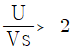
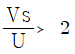
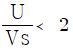
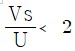
(정답률: 알수없음)
18. 지상 10m에서의 풍속이 4m/sec일 때, 44m 높이에서의 풍속은 얼마인가? (단, Deacon의 지수법칙 이용, 풍속지수(p)는 0.2)
- 4.8m/sec
- 5.4m/sec
- 6.6m/sec
- 8.4m/sec
(정답률: 알수없음)
19. 대류권에서의 CO2의 평균농도가 370cm이고, 대류권의 평균높이가 10km일 때, 대류권내에 존재하는 CO2의 무게는? (단, 지구의 반지름을 6400km라 가정한다.)
- 1.87×1012ton
- 3.74×1012ton
- 1.87×1013ton
- 3.74×1013ton
(정답률: 알수없음)
20. 다음 중 최근까지 알려진 것으로 온실효과에 영향을 미치는 기여도(%)가 가장 큰 물질은?
- CH4
- CFCs
- O3
- CO2
(정답률: 알수없음)
2과목: 대기오염 공정시험 기준(방법)
21. 다음은 굴뚝 배출가스 중 크롬화합물을 흡광광도법으로 측정하는 방법이다. ( )안에 알맞은 것은?
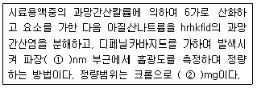
- ① 460 ② 0.⑤-0.2
- ① 460 ② 0.002-0.⑤
- ① 540 ② 0.⑤-0.2
- ① 540 ② 0.002-0.⑤
(정답률: 알수없음)
22. 대기오염공정시험방법상 명시된 용어에 관한 설명 중 다음 ( )안에 알맞은 것은?
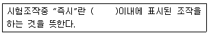
- 10초
- 20초
- 30초
- 1분
(정답률: 알수없음)
23. 4-아미노 안티피린법으로 페놀화합물을 정량할 때, 부의오차를 일으키는 물질만의 조합으로 옳은 것은?
- Cl2, Br2, H2S, NaCl
- Br2, H2S, SO2, NaCl
- Cl2, Br2, H2S, SO2
- SO2, Cl2, Br2, NaCl
(정답률: 알수없음)
24. 다음 중 가스크로마토그래프법에서 사용되는 용어가 아닌 것은?
- Column Oven, Peak
- Monochrometer, Line spectrum
- Stationary Liquid, Dead Volume
- Pen Reaponse Time, Chart Speed
(정답률: 알수없음)
25. 단면이 정방형인 연도를 등면적으로 4구분으로 나누어 먼지를 측정하였다. 각 구분면의 유속은 4.8, 5.0, 5.2, 4.5m/sec 이며, 그 구분에 대응하는 분진농도는 각각 0.55, 0.50, 0.48, 0.52g/Sm3이었다. 이 때 총평균 먼저농도는?
- 0.55g/Sm3
- 0.54g/Sm3
- 0.53g/Sm3
- 0.51g/Sm3
(정답률: 알수없음)
26. 피토우관을 사용하여 가스유속을 측정할 때 다음과 같은 결과를 얻었다고 할때, 유속(m/s)은?
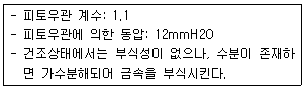
- 12.3m/s
- 13.5m/s
- 14.8m/s
- 16.2m/s
(정답률: 알수없음)
27. 흡광광도법에서 흡수셀의 세척방법에 관한 설명 중 가장 거리가먼 것은?
- 탄산나트륨용액(2W/V%)에 소량의 음이온 계면활성제를 가한 용액에 흡수셀을 담가놓고 40-50℃로 약 10분간 가열한다.
- 흡수셀을 꺼내 물로 씻은 후 질산(1+5)에 소량의 과산화수소를 가한 용액에 약 30분간 담궈 둔다.
- 흡수셀을 새로 만든 크롬산과 황산용액에 약 1시간 담근 다음 물로 씻어낸다.
- 빈번하게 사용할 때는 물로 잘 씻은 다음 식염수(9%)에 담궈 두고 사용한다.
(정답률: 알수없음)
28. 악취시험방법으로 옳지 않은 것은?
- 직접관능법의 경우 판정수가 동일한 경우에는 악취도가 높은 것을 선택하며, 2도 이하이면 적합, 3도 이상이면 부적합으로 판정한다.
- 직접관능법의 경우 악취가 발생하는 현장의 부지경계선 상에서 취기강도가 가장 높은 지점을 선정, 건강한 사람의 후각을 이용하여 악취의 취기강도를 측정하는 방법이다.
- 직접관능법의 경우 악취감도가 보통취기(Moderate)는 악취판정도 3에 해당되며, 부적합으로 판정한다.
- 공기희석관능법의 경우 부지경계선에서 시료채취 시 풍속이 5m/초 이상인 경우는 시료를 채취하지 아니한다.
(정답률: 알수없음)
29. 굴뚝 배출가스 내의 벤젠을 흡광광도법으로 분석하는 경우 시료채취량이 10L일 때, 적합한 시료가스중의 벤젠농도의 범위는?
- 약 0.1-2 V/Vppm
- 약 2-20 V/Vppm
- 약 25-250 V/Vppm
- 약 250 V/Vppm 이상
(정답률: 알수없음)
30. 흡광광도법에 관한 설명 중 옳지 않은 것은?
- 광전관, 광전자증배관은 가시파장 범위에서, 광전도셀은 자외 내지 가시파장 범위에서, 광전지는 근적외파장범위 내에서의 광선측광에 주로 사용된다.
- 전원부에는 광원의 강도를 안정시키기 위한 장치를 사용할 때도 있다.
- 광원부의 광원에는 텅스텐램프, 중수소방전관 등을 사용하며 점등을 위하여 전원부나 렌즈와 같은 광학계를 부속시킨다.
- 일반적으로 사용하는 흡광광도 분석장치는 광원부, 파장선택부, 시료부 및 측광부로 구성된다.
(정답률: 알수없음)
31. 굴뚝 배출가스내의 페놀류의 분석방법 중 가스크로마토그래프법의 충전제로 아피에존 L을 사용할 때의 조건으로 옳지 않은 것은?
- 분리관 재질은 유리 또는 스테인레스 강을 사용한다.
- 분리관 규격은 내경 5mm, 길이 3-7m이다.
- 검출기는 수소염이온화검출기를 사용한다.
- 운반가스유량은 40-60mL/분 이다.
(정답률: 알수없음)
32. 다음 중 비산먼지를 하이볼륨에어샘플러법을 이용하여 원칙적으로 시료채취를 하지 않는 경우로 가장 거리가 먼 것은?
- 풍속이 0.5m/초 미만일 때
- 비나 눈이 올 때
- 대상발생원의 조업이 중단되었을 때
- 풍속이 5m/초 이상일 때
(정답률: 알수없음)
33. 환경기준시험에 있어서 시료채취방법에 관한 다음 설명 중 옳지 않은 것은?
- 시료채취 유량은 규정하는 범위 내에서는 되도록 많이 채취하는 것을 원칙으로 한다.
- 장애물이 있을 경우에는 채취위치로부터 장애물까지의 거리가 그 장애물 높이의 2배이상 되는 곳을 선정한다.
- 주위에 건물 등이 밀집되어 있을 때는 건물 바깥벽으로부터 적어도 1m이상 떨어진 곳을 취취점으로 선정한다.
- 시료채취의 높이는 그 부근의 평균오염도를 나타낼 수 있는 곳으로서 가능한 한 1.5-10m 범위로 한다.
(정답률: 알수없음)
34. 굴뚝, 덕트 등을 통하여 대기중으로 배출되는 가스상 물질을 분석하기 위한 시료채취방법에 관한 설명 중 옳지 않은 것은?
- 채취관은 흡인가스의 유량, 채취관의 기계적 강도, 청소의 용이성 등을 고려하여 안지름 6-25mm정도의 것을 쓴다.
- 도관은 가능한 한 수직으로 연결해야 하고, 부득이 구부러진 관을 쓸 경우에는 응축수가 흘러나오기 쉽도록 경사지게(5°이상)한다.
- 도관의 안지름은 도관의 길이, 흡입가스의 유량, 응축수에 의한 막힘, 또는 흡인펌프의 능력 등을 고려하여 4-25mm로 한다.
- 채취부의 수은마노미터는 대기와 압력차가 150mmHg이하인 것을 쓴다.
(정답률: 알수없음)
35. 환경대기내의 옥시단트의 수동측정방법 중 중성요오드화칼륨법의 측정범위(오존으로써)기준으로 옳은 것은?
- 0.1-10ppm
- 0.5-20ppm
- 0.01-10ppm
- 0.⑤-20ppm
(정답률: 알수없음)
36. 굴뚝 배출가스 중의 염화수소농도를 분석하는 방법으로 가장 거리가 먼 것은?
- 이온크로마토그래프법
- 이온전극법
- 질산은적정법
- 가스크로마토그래프법
(정답률: 알수없음)
37. 분진을 포함하는 건조가스가 상온상압으로 굴뚝내에서 20m/sec의 유속으로 흐르고 있다. 함진공기를 구경 10mm의 흡인노즐을 사용 측정할 경우, 등속흡인을 위한 흡인유량은 몇 L/min인가? (단, 흡인량의 측정은 건식 가스미터를 사용하였고, 측정법은 먼지측정방법 중 수동측정방법임.)
- 약 91
- 약 94
- 약 98
- 약 100
(정답률: 알수없음)
38. 환경대기 중 휘발성유기화합물을 고체흡착 열탈착방법으로 분석하고자 할때, 다음 중 열탈착 장치에 대한 설명으로 옳지 않은 것은?
- 각 흡착관은 분석하기 전에 누출시험을 실시하며, 시료가 흐르는 모든 유로는 분석하기 전 흡착관에 일어나 가스가 공급된 상태에서 누출시험을 실시한다.
- 퍼지용가스는 제로가스와 동등이상의 순도를 지닌 질소나 헬륨가스를 사용한다.
- 일반적으로 흡착관을 저온으로 유지하기 위해서 액체질소, 액체아르곤, 드라이아이스와 같은 냉매를 사용하거나 전기적으로 온도를 강하시킨다.
- 고농도(10ppb이상)시료에서 수분의 간섭으로 인한 분리관과 검출기 피해를 최소화하기 위해 보통 10:1 이상으로 시료분할(splitting)을 실시한다.
(정답률: 알수없음)
39. 굴뚝 배출가스 내의 황화수소(H2S)의 흡광광도법 (메틸렌블루우법)에서의 농도범위가 5-100ppm일 때 알맞은 시료 채취량은?
- 1-10L
- 20-40L
- 100mL-1L
- 0.1-5L
(정답률: 알수없음)
40. 굴뚝 배출가스 중 총탄화수소의 측정방법에 대한 설명으로 옳지 않은 것은?
- 교정가스는 농도를 알고 있는 희석가스를 사용한다.
- 반응시간은 오염물질농도의 단계변화에 따라 최종값의 90%에 도달하는 시간으로 한다.
- 스팬값으로 측정기기의 측정범위는 보통 배출허용기준의 0.5-1.2배를 적용한다.
- 스팬값으로 측정범위가 없는 경우에는 예상농도의 1.2-3배의 값을 사용한다.
(정답률: 알수없음)
3과목: 대기오염방지기술
41. 여과집진장치의 특성에 관한 설명으로 옳지 않은 것은?
- 점성이 있는 조대분진을 탈진할 경우 간헐식 탈진방식 중 진동형은 여포 손상의 경우가 적고, 연속식에 비해 대량의 가스 처리에 적합한 방식이다.
- 간헐식 탈진방식은 분진의 재비산이 적고, 높은 집진율을 얻을 수 있으며, 여포 수명은 연속식에 비해 길다.
- 연속식 탈진방식은 포집과 탈진이 동시에 이루어지므로 압력손실이 거의 일정하다.
- reverse jet형과 pulse jet형은 연속식 탈진방식에 속한다.
(정답률: 알수없음)
42. 유체가 관로를 흐를 때 발생되는 압력손실에 관한 설명으로 옳지 않은 것은?
- 유체의 비중량에 반비례한다.
- 관의 내경에 반비례한다.
- 관의 길이에 비례한다.
- 유체의 평균유속의 제곱에 비례한다.
(정답률: 알수없음)
43. 전기집진장치에 관한 설명으로 옳지 않은 것은?
- 처리가스가 적은 경우 다른 고성능 집진장치에 비해 건설비가 비싸다.
- 부식성 가스가 함유된 먼지도 처리가 가능하다.
- 350℃의 고온에서도 처리가 가능하다.
- 주어진 조건에 따른 부하변동 적응이 용이하다.
(정답률: 알수없음)
44. 다음 중 이젝터를 사용하여 물을 고압분무하여 수적과 접촉 포집하는 방식으로 송풍기를 사용하지 않는 것이 특징이며, 처리가스량이 많을 경우에는 효과가 적은 집진장치는?
- 사이크론 스크러버
- 제트 스크러버
- 벤츄리 스크러버
- 임펄스 스크러버
(정답률: 알수없음)
45. 벤츄리 스크러버에 관한 설명으로 옳지 않은 것은?
- 가압수식 중에서 집진율이 가장 높아 광범위하게 사용된다.
- 소형으로 대용량의 가스처리가 가능하다.
- 먼지와 가스의 동시제거가 가능하나 압력손실이 크다.
- 먼지부하 및 가스유동에 민감하지 않으나, 반면에 대량의 세정액이 요구된다.
(정답률: 알수없음)
46. 부탄 1kg을 표준상태에서 완전연소시키는데 필요한 이론산소의 량(kg)은?
- 1
- 2.8
- 3.6
- 5.4
(정답률: 알수없음)
47. 집진장치에 관한 설명 중 옳지 않은 것은?
- Venturi Scrubber에서의 액가스비(L/m3)는 일반적으로 분진의 입경이 작고, 친수성이 아닐수록 작아진다.
- 중력식 집진장치는 보통 50-100㎛ 이상의 큰 입자의 포집에 주로 사용되며, 압력손실은 5-10mmH2O 정도이다.
- bag filter는 여과집진의 대표적인 것으로 1㎛이하의 미립자도 포집 가능하다.
- 음파집진장치는 함진가스 중의 입자에 음파진동을 부여하여 입자를 응집 제진한다.
(정답률: 알수없음)
48. 미분탄연소의 장점으로 거리가 먼 것은?
- 연료의 접촉표면적이 크므로 적은 공기비로 연소가 가능하다.
- 연소량의 조절이 용이하다.
- 과잉공기에 의한 열손실이 적다.
- 비산분진의 배출량이 적다.
(정답률: 알수없음)
49. 전기집진장치에서 먼지의 비저항이 적을 때(104Ωㆍcm 이하)전기저항을 높여주기 위하여 주입하는 것은?
- 암모니아
- 트리에틸아민
- 수증기
- 황산
(정답률: 알수없음)
50. 어떤 집진장치의 입구와 출구에서 가스의 함진농도를 측정한 결과 각각 30g/Sm3, 0.3g/Sm3 이었고, 또한 입구와 출구의먼지 중 입경범위가 0-5㎛인 것의 질량분율이 각각 10% 및 50% 이었다면 이 집진장치의 0-5㎛인 시료먼지에 대한 부분 집진율은?
- 99%
- 98%
- 95%
- 93%
(정답률: 알수없음)
51. 어느 보일러의 배출가스 조성이 CO2: 8%, O2: 12%, N2: 80% 이었다면 공기비는?
- 1.9
- 2.3
- 2.8
- 3.4
(정답률: 알수없음)
52. 연료의 착화온도에 관한 설명으로 옳지 않은 것은?
- 분자구조가 복잡할수록 낮아진다.
- 활성화에너지가 클수록 낮아진다.
- 발열량이 높을수록 낮아진다.
- 화학결합의 활성도가 클수록 낮아진다.
(정답률: 알수없음)
53. 세정식 집진장치의 특성과 가장 거리가 먼 것은?
- 소수성 입자의 집진효과가 크다.
- 전기집진장치에 비해 협소한 장소에 설치할 수 있다.
- 한번 제거된 입자는 보통 처리가스 속으로 재비산되지 않는다.
- 연소성 및 폭발성 가스의 처리가 가능하다.
(정답률: 알수없음)
54. 이론적으로 탄소 1kg을 연소시키면 30000kcal의 열이 발생하며, 수소 1kg을 연소시키면 34100kcal의 열이 발생된다면 에탄 2kg 연소시 발생되는 열량은?
- 40820 kcal
- 55600 kcal
- 61640 kcal
- 74100 kcal
(정답률: 알수없음)
55. 어떤 집진장치의 압력손실이 600mmH2O, 처리가스량이 750m3/min, 송풍기 효율이 75%일 때 소요동력(HP)?
- 약 132
- 약 145
- 약 158
- 약 168
(정답률: 알수없음)
56. 다음 중 헨리법칙이 가장 잘 적용되는 물질은?
- H2
- Cl2
- HCl
- HF
(정답률: 알수없음)
57. 관성력 집진장치에 관한 다음 설명 중 옳지 않은 것은?
- 충돌식과 반전식이 있으며, 일반적으로 고온가스의 처리가 가능하므로 굴뚝 또는 배관 내에 적용될 때가 많다.
- 충돌식은 일반적으로 충돌 직전의 처리 가스속도가 크고, 처리 후 출구 가스속도는 느릴수록 미립자 제거가 쉽다.
- 반전식은 기류의 방향전환 시 곡률반경이 클수록, 방향전환 횟수는 많을수록 압력손실은 커지나, 집진효율은 좋다.
- 액체 입자의 포집에 사용되는 multi baffle형은 1㎛ 전후의 미립자 제거가 가능하나, 완전하게 처리하기 위해 가스출구에 충전층을 설치하는 것이 좋다.
(정답률: 알수없음)
58. 흡착제에 관한 설명 중 옳지 않은 것은?
- 활성탄은 유기용제의 회수, 악취제거, 가스정화에 사용된다.
- 실리카겔은 수분과 같은 극성물질에 대한 흡착력은 약하다.
- 흡착제의 비표면적과 흡착물질에 대한 친화력이 크면 클수록 흡착의 효과는 커진다.
- 합성지올라이트는 특정한 물질을 선택적으로 흡착시키는데 이용할 수 있다.
(정답률: 알수없음)
59. 일반 보일러실에서 황 함유량이 0.8%, 비중이 0.93인 B-C유를 1000L/hr로 소비시킬 때 방출되는 SO2의 이론량(Sm3/hr)은?
- 9.⑤
- 6.65
- 5.21
- 14.10
(정답률: 알수없음)
60. 연료 1kg을 연소하여 발생되는 건연소가스량이 12.50Sm3/kg이다. 이 때 연료 1kg중에 포함된 수소의 중량비가 20%라면 습연소가스량(Sm3/kg)은 얼마인가?
- 12.70
- 13.52
- 14.74
- 15.00
(정답률: 알수없음)
4과목: 대기환경 관계 법규
61. 대기환경보전법규상 자동차 연료(휘발유) 제조기준으로 옳지 않은 것은? (단, 적용기간: 2008년 12월 31일까지)
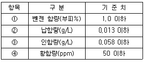
- ①
- ②
- ③
- ④
(정답률: 알수없음)
62. 대기환경보전법령상 휘발유 사용 자동차의 제작차 배출허용기준이 설정된 오염물질의 종류에 해당되지 않는 것은?
- 일산화탄소
- 탄화수소
- 질소산화물
- 입자상물질
(정답률: 알수없음)
63. 환경정책기본법령상 오존의 대기 환경기준은? (단, 1시간 평균치이며, 단위: ppm)
- 0.⑤ 이하
- 0.06 이하
- 0.1 이하
- 0.15 이하
(정답률: 알수없음)
64. 대기환경보전법규상 대기오염물질에 대한 자가측정항목이 아닌 것은?
- 일산화탄소
- 비산먼지
- 먼지
- 염소
(정답률: 알수없음)
65. 대기환경보전법상 100만원 이하의 과태료 부과대상인 자는?
- 자동차의 원동기 가동제한을 위반한 자동차의 운전자
- 황함유기준을 초과하는 연료를 공급 판매하거나 사용한 자
- 비산먼지의 발생억제시설의 설치 및 필요한 조치를 하지 아니하고 시멘트ㆍ석탄ㆍ토사 등 분체상 물질을 운송한 자
- 배출시설 등 운영상황에 관한 기록을 보존하지 아니한 자
(정답률: 알수없음)
66. 대기환경보전법규상 대기오염물질배출시설에 해당되지 않는 것은? (단, 비금속광물제품제조시설에 한한다.)
- 처리능력이 시간당 0.5톤 이상의 냉각시설(서냉시설 제외)
- 산처리시설(부식시설 제외)
- 연료사용량이 시간당 30kg 이상 또는 용적 3m3 이상의 소성시설(나무를 연료로 사용하는 도자기 제조시설 제외)
- 용적 3m3 이상의 혼합시설
(정답률: 알수없음)
67. 대기환경보전법규상 위임업무 보고횟수 기준에 관한 사항이다. ( )안에 알맞은 것은?
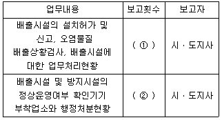
- ①연 4회, ② 수시
- ①연 2회, ② 수시
- ①연 2회, ② 연 2회
- ①연 4회, ② 연 2회
(정답률: 알수없음)
68. 대기환경보전법규상 대기오염 경보단계 중 중대경보가 발령되는 오염물질의 농도기준으로 옳은 것은?
- 기상조건 등을 검토하여 해당지역 내 대기자동측정소의 오존농도가 0.3ppm 이상일 때
- 기상조건 등을 검토하여 해당지역 내 대기자동측정소의 오존농도가 0.5ppm 이상일 때
- 기상조건 등을 검토하여 해당지역 내 대기자동측정소의 오존농도가 1.0ppm 이상일 때
- 기상조건 등을 검토하여 해당지역 내 대기자동측정소의 오존농도가 2.0ppm 이상일 때
(정답률: 알수없음)
69. 대기환경보전법령상 최초로 배출시설을 설치한 경우 사업자가 환경기술인을 임명신고할 때의 기간기준으로 옳은 것은?
- 가동개시신고와 동시
- 가동개시신고 후 5일 이내
- 배출시설설치 허가신청서 접수시
- 배출시설설치 허가를 받은 후 5일 이내
(정답률: 알수없음)
70. 대기환경보전법규상 배출시설의 변경신고 대상이 아닌 것은?
- 배출시설을 동종ㆍ동일규모의 시설로 대체하는 경우
- 배출시설을 폐쇄하는 경우
- 사업장의 명칭을 변경하는 경우
- 설치허가를 받은 배출시설의 용도에 다른 용도를 추가하는 경우
(정답률: 알수없음)
71. 다중이용시설 등의 실내공기질관리법규상 실내공간오염물질에 해당하지 않는 것은?
- 이산화탄소(CO2)
- 일산화질소(NO)
- 일산화탄소(CO)
- 이산화질소(NO2)
(정답률: 알수없음)
72. 대기환경보전법규상 대기오염물질 배출시설(공통시설)기준으로 옳지 않은 것은?
- 소각능력이 시간당 25kg 이상의 폐기물소각시설
- 동력 15마력 이상의 분쇄시설(습식 및 이동식 포함)
- 동력 3마력 이상의 도장시설
- 포장능력이 시간당 100kg 이상의 고체입자상물질 포장시설
(정답률: 알수없음)
73. 대기환경보전법규상 휘발성유기화합물을 배출하는 시설을 설치하고자 하는 자가 규정의 첨부서류와 함께 휘발성유기화합물 배출시설 설치신고서를 시ㆍ도지사에게 제출하여야 하는 기간기준으로 옳은 것은?
- 시설설치일과 동시
- 시설설치일 5일전까지
- 시설설치일 10일전까지
- 시설설치일 30일전까지
(정답률: 알수없음)
74. 대기환경보전법규상 “특정대기유해물질”에 해당되지 않는 것은?
- 브롬화합물
- 크롬화합물
- 불소화물
- 이황화메틸
(정답률: 알수없음)
75. 악취방지법규상 악취검사기관의 기술인력 기준 중 악취분석요원에 해당하는 자로 가장 거리가 먼 것은?
- 화학분석기능사
- 환경기능사
- 국ㆍ공립연구기관의 대기분야 실험실에서 3년 이상 근무한 자
- 환경영향조사 등에 관한 규칙에 의한 평가원으로부터 시험ㆍ검사 기관의 인정을 받은 기관의 악취분석요원
(정답률: 알수없음)
76. 대기환경보전법령상 기본부과금의 농도별 부과계수로 옳게 연결된 것은? (단, 연료를 연소하여 황산화물을 배출하는 시설임(황산화물의 배출 저감을 위해 방지시설을 설치한 경우와 생산공정상 황산화물의 배출이 저감된다고 인정하는 경우 제외))
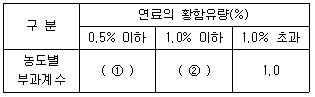
- ① 0.3, ② 0.5
- ① 0.2, ② 0.4
- ① 0.1, ② 0.3
- ① 0.2, ② 0.5
(정답률: 알수없음)
77. 대기환경보전법령상 일일오염물질배출량 및 일일유량의 산정방법으로 옳은 것은?
- 일일조업시간은 측정하기 전 최근 조업한 30일간의 배출시설의 조업시간 평균치로서 시간으로 표시한다.
- 먼지의 배출농도의 단위는 세제곱미터당 마이크로그램으로 표시한다.
- 특정유해물질의 배출허용기준초과일일오염물질배출량은 소수점이하 첫째자리까지 계산한다.
- 먼지의 배출허용기준초과일일오염물질배출량은 일일유량 × 배출허용기준초과농도 × 10-3으로 산정한다.
(정답률: 알수없음)
78. 대기환경보전법규상 환경기술인의 관리사항인 것은?
- 배출시설 및 방지시설을 정상가동하여 오염물질 등의 배출이 배출허용기준에 적합하도록 할 것
- 배출시설 및 방지시설의 관리 및 개선
- 배출시설 및 방지시설의 운영에 관한 업무일지를 사실에 기초하여 작성
- 정확한 자가측정
(정답률: 알수없음)
79. 악취방지법규상 위임업무 보고사항 중 업무내용의 보고횟수 기준이 연 4회인 것은?
- 악취검사기관의 지정, 지정사항 변경보고 접수실적
- 악취검사기관의 지도ㆍ점검 및 행정처분실적
- 악취배출시설의 설치신고, 악취검사, 악취배출시설에 대한 업무처리현황
- 악취배출업소의 지도ㆍ점검 및 행정처분실적
(정답률: 알수없음)
80. 대기환경보전법규상 대기환경규제지역의 지정대상지역 기준으로 옳은 것은?
- 대기오염도가 환경정책기본법의 규정에 의하여 설정된 환경기준의 80퍼센트 이상인 지역
- 대기오염도가 환경정책기본법의 규정에 의하여 설정된 환경기준의 70퍼센트 이상인 지역
- 대기오염도가 환경정책기본법의 규정에 의하여 설정된 환경기준의 60퍼센트 이상인 지역
- 대기오염도가 환경정책기본법의 규정에 의하여 설정된 환경기준의 50퍼센트 이상인 지역
(정답률: 알수없음)